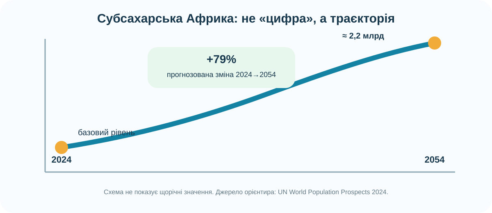
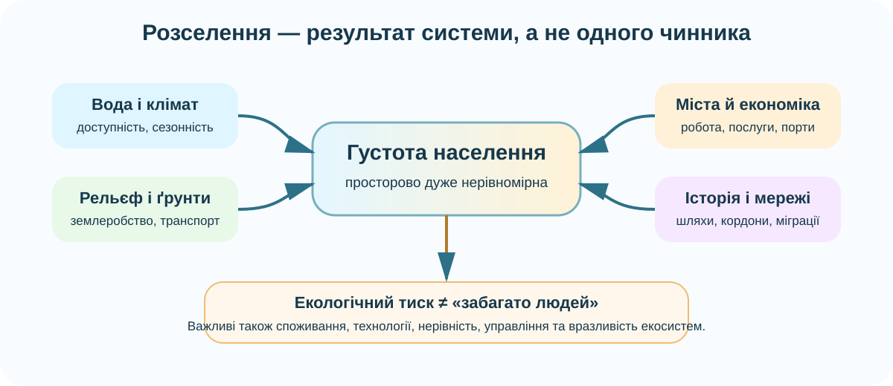

1. Почніть із карти густоти населення

Запишіть щонайменше чотири осередки високої густоти й два великі малозаселені райони. Поки що не пояснюйте причини.
WorldPop створює відкриті високодетальні просторові демографічні набори даних. Карта — не «фото людей», а модель розподілу населення.
2. Перевірте чотири контрастні території
OpenStreetMap. Збільшуйте карту: водні об’єкти, дороги, міська забудова, землеробські території та транспортні вузли дають додаткові докази.
Матриця доказів
Для кожної території поставте оцінку від 0 до 3: наскільки чинник сприяє концентрації населення?
3. Зростання населення: що саме означає «швидко»?

За World Population Prospects 2024 ООН, населення країн субсахарської Африки між 2024 і 2054 роками прогнозовано зросте приблизно на 79%, до близько 2,2 млрд.
4. Екологічна проблема як система причин

Кейс: басейн озера Чад
Побудуйте причинний ланцюг, не зводячи проблему до однієї причини.
5. Модель розселення: зберіть систему

Яке твердження витримує перевірку?
6. Коротке відео — перевірте свою модель
Відео, пов’язане з темою в ресурсах КТП. Під час перегляду фіксуйте не факти «взагалі», а докази для Вашої моделі розселення.
1) Який природний чинник згадано? 2) Який суспільний? 3) Яку екологічну проблему пов’язано з діяльністю людини?
7. Теорія — тепер систематизуємо
Населення розміщене нерівномірно
Висока густота характерна для долини та дельти Нілу, районів Гвінейської затоки, Великих Африканських озер, окремих нагір’їв і великих міських агломерацій. Сахара, Наміб і частини Калахарі малозаселені.
Природні чинники
Вода, температура, опади, родючість ґрунтів, рельєф і природні ризики впливають на придатність території для життя й господарства, але не визначають карту населення самі.
Суспільні чинники
Міста, робочі місця, порти, транспорт, історичні шляхи, державні кордони, конфлікти, інфраструктура і міграції можуть посилити або змінити природну закономірність.
8. CER — сформулюйте доказовий висновок
C — Claim
E — Evidence
R — Reasoning
9. Домашнє завдання
Опрацюйте тему підручника про населення Африки та виконайте міні-дослідження: оберіть два райони материка з різною густотою населення. Для кожного наведіть 1 природний і 1 суспільний чинник та один картографічний доказ.
Електронний підручник: Гільберг, Довгань, Совенко — Географія, 7 клас ↗
У висновку не використовуйте формулу «там живе мало людей, бо поганий клімат» без конкретного доказу й перевірки альтернативних причин.
10. Підсумковий тест — 10 балів
Тест відкриється лише після заповнення всіх трьох полів.